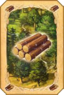

Selección de Colores
Marque las Casillas para elegir los Colores que habrá
En caso de ser 6 jugadores, marque todas las Casillas.
Si son 5 jugadores, marque los colores que se usaran.
Si ya se eligieron los colores, clickee en "Continuar".
